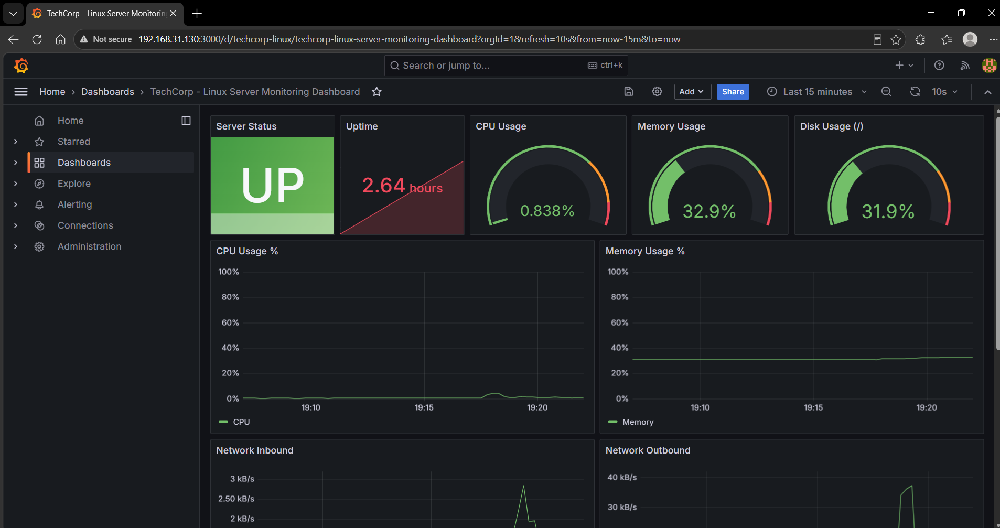
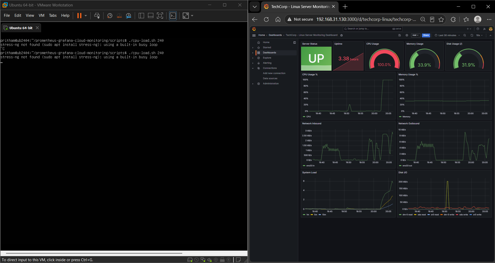
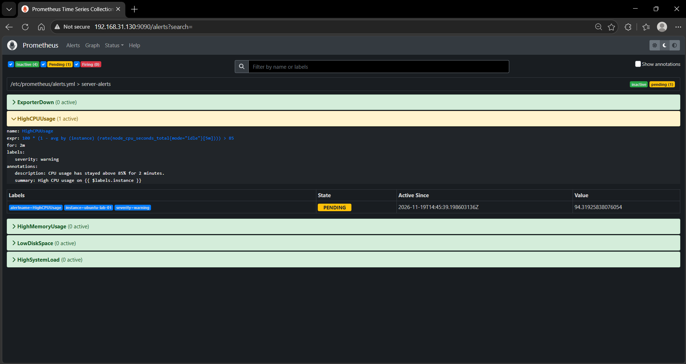
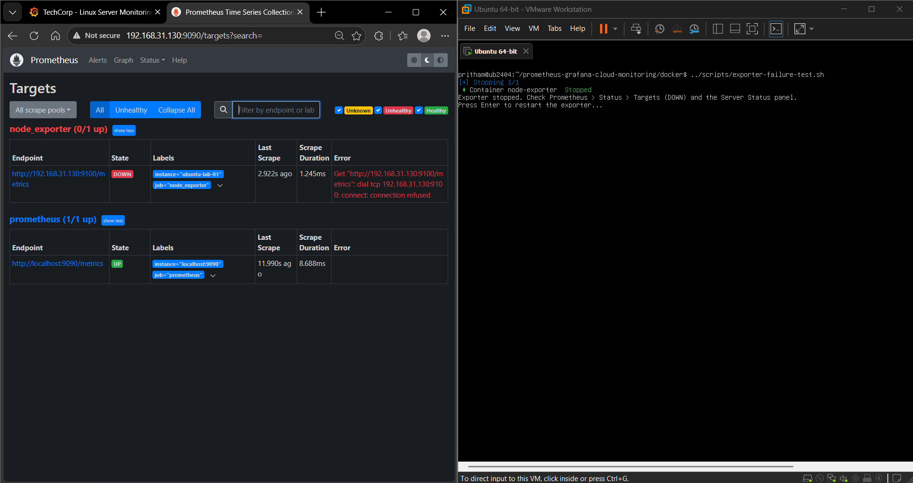
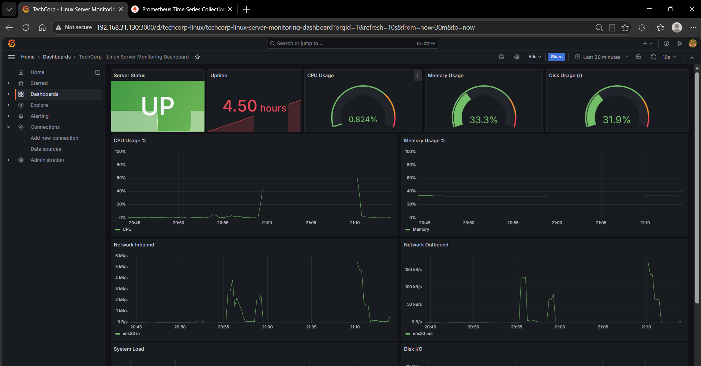

How it works
Metrics flow from the server to a dashboard every 15 seconds.
Ubuntu Server VMCPU · RAM · disk · network
→
Node Exporterport 9100 · /metrics
→
Prometheusport 9090 · scrape, store, alert
→
Grafanaport 3000 · dashboard
Collect
Node Exporter exposes host metrics. Prometheus scrapes them every 15 seconds.
Visualize
An 11-panel Grafana dashboard loads automatically from code: status, uptime, CPU, memory, disk, network, load, disk I/O.
Detect
Five alert rules: exporter down, high CPU, high memory, low disk, high system load.
Dashboard
Live data from the lab VM, with the target showing UP.

Failure tests
The system was tested by creating real problems and checking that monitoring noticed.




Stack
- Prometheus 2.53
- Grafana 11.2
- Node Exporter 1.8
- Docker Compose
- PromQL
- Ubuntu Server 24.04
- VMware
- YAML
- Bash
Scope
What is built, and what is not.
Built and tested
- One-command setup with Docker Compose
- Provisioned data source and dashboard
- Alert rules visible in Prometheus
- CPU load and exporter failure tests
Not included
- Alertmanager notifications
- Multiple servers
- Cloud-hosted monitoring
This is a local lab. The screenshots are from my own VM, so this page is a project showcase, not a live monitoring service.